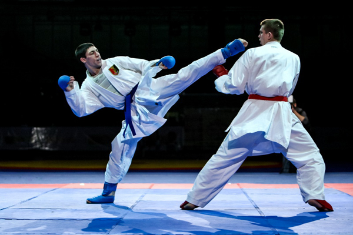
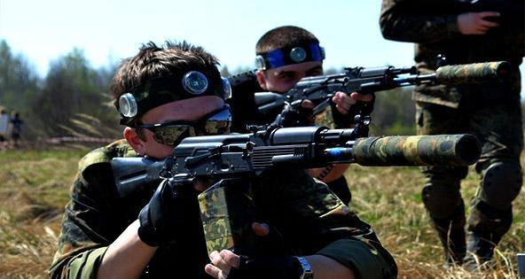
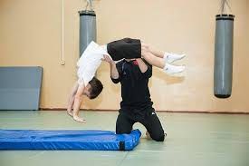
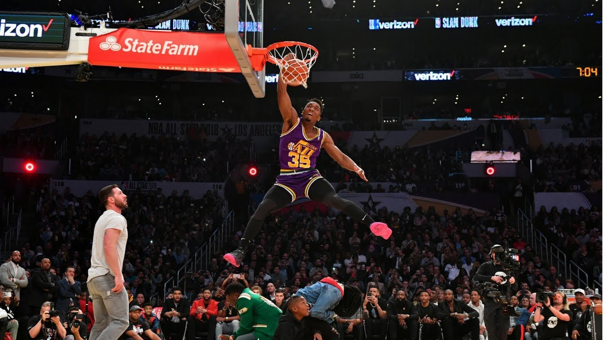

Я займався карате з 9 років , що правда, я ходив на гурток всього 3 роки , бо всі мої друзі перестали ходити, нам поміняли тренера, та мені просто там уже стало скучно , бо я був досить сильним. Звісно я їздив і на змагання , був я тільки на 3 змаганнях , у Львові де я нічого не зайняв, у Луцьку де так само нічого не зайняв , І у Ворохті на змаганнях під назвою "Кубок Карпат" де я зайняв 1 місце
Після карате я почав займатися лазертагом , в мене одразу почало все получатися і на 3 місяць мого відвідування цього гуртка я поїхав на всеукраїнські змагання де ми з командою зайняли 4 місце. Не погано як для 1 змагань, дальше були змагання між школами нашого міста де ми без проблем зайняли 1 місце, показові виступи в інших школах і тд. Потім мене чекали ще одні всеукраїнські змагання, де ми зайняли уже 2 місце , після цього були змагання між клубами нашого міста де ми також без проблем зайняли 1 місце.
Паралельно з лазертагом я займався гімнастикою , не професійно , а просто для себе , щоб вивчити деякі акробатичні трюки. Багато про цей вид спорту не можу розказати как як я займався ним менше року . Я просто вивчив як робити різні види сальта , і там інші акробатичні трюки , назви яких дуже не понятні :)
І останнє з моїх хобі це баскетбол. Ним я займаюсь і зараз мені дуже подобається цей вид спорту , я спочатку сам 2 роки займася баскетболом , просто грав з друзями на площадках, потім я пішов на гурток де через ЗНО я довго не зміг позайматися , але тепер я продовжую сам грати , тренуватися та вдосконалювати себе
